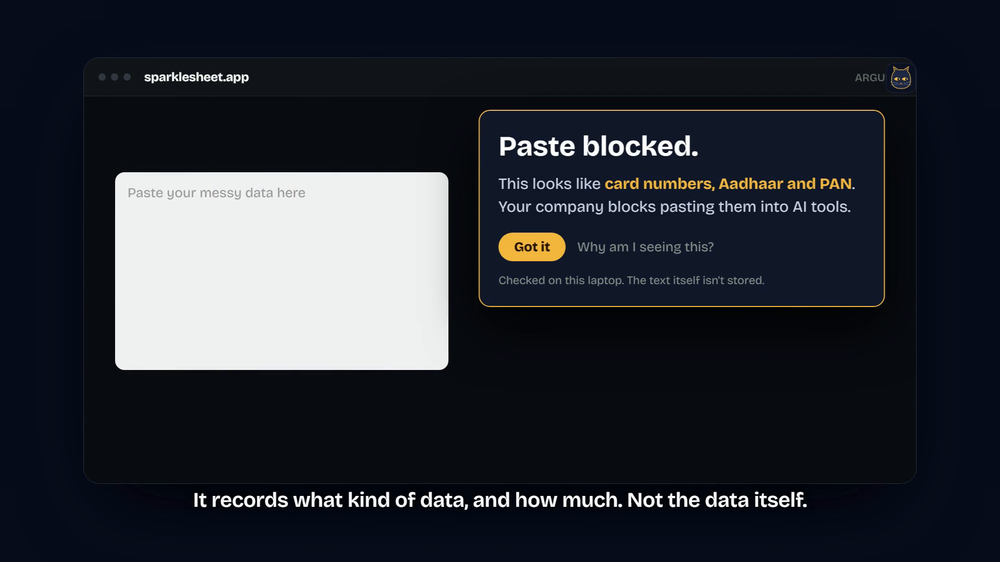

Inspected on the laptop
Content checks run locally on 127.0.0.1. An alert carries the type and count of what was found, never the text itself.
Self-hosted DLP for Windows laptops · v0.6
ARGUS catches company data at the moment it leaves a laptop: on the clipboard, onto a USB drive, or into a browser tab. It recognises card numbers, PAN, Aadhaar, credentials and production data on the laptop itself, raises one clear alert per incident on your own servers, and shows every employee exactly what it collects.
At a glance
Content checks run locally on 127.0.0.1. An alert carries the type and count of what was found, never the text itself.
Built on Wazuh and Microsoft Sysmon. No vendor cloud, and no laptop port reachable from the network.
A tray icon shows each employee what this deployment collects. Blocking stays off until you switch it on.
Why now
Customer data walks out through clipboards, USB sticks and AI chat boxes. In India, two numbers changed the conversation in the last year.
The film

2:30 · narratedArjun pastes the quarter's customer list into a free AI site, and by morning it's for sale. Then the night rewinds. This time ARGUS checks the paste on the laptop, blocks it, and tells the security team, without anyone reading his screen.
Explore
Roadmap
Start small
One Linux server and a pilot group in Intune or Group Policy. Detection runs from day one with every blocking feature off, so you see what ARGUS would catch before anyone's work is affected.